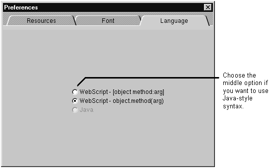
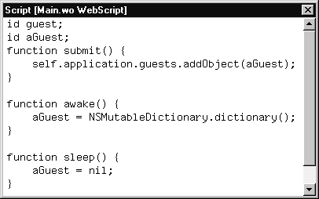

Table of Contents
Table of Contents
 Previous Section
Previous Section
Table of Contents
Previous Section
WebScript has two different accepted syntax styles. One style is similar to Objective-C. The other style is similar to Java. The default is the Objective-C style syntax, and that is the style WebObjects Builder uses when you create a new method.
To have WebObjects Builder use Java-style syntax, bring up the Preferences panel, go to the Language tab and choose WebScript - object.method(arg).

After you do this, any method you create look like those shown below. (See "Using WebScript" in the WebObjects Developer's Guide for a description of both syntaxes.)
